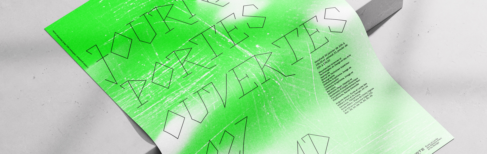
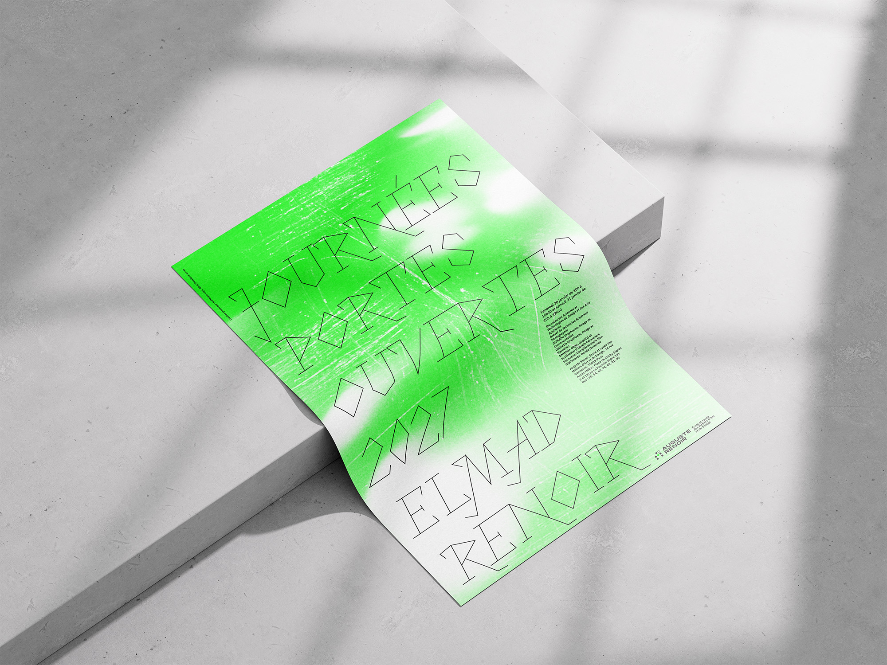
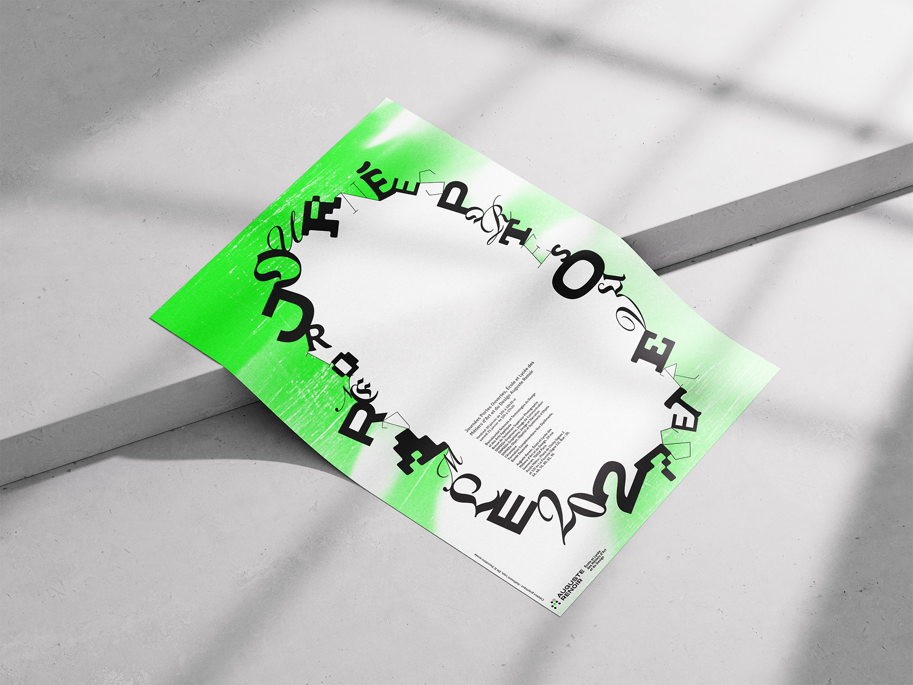
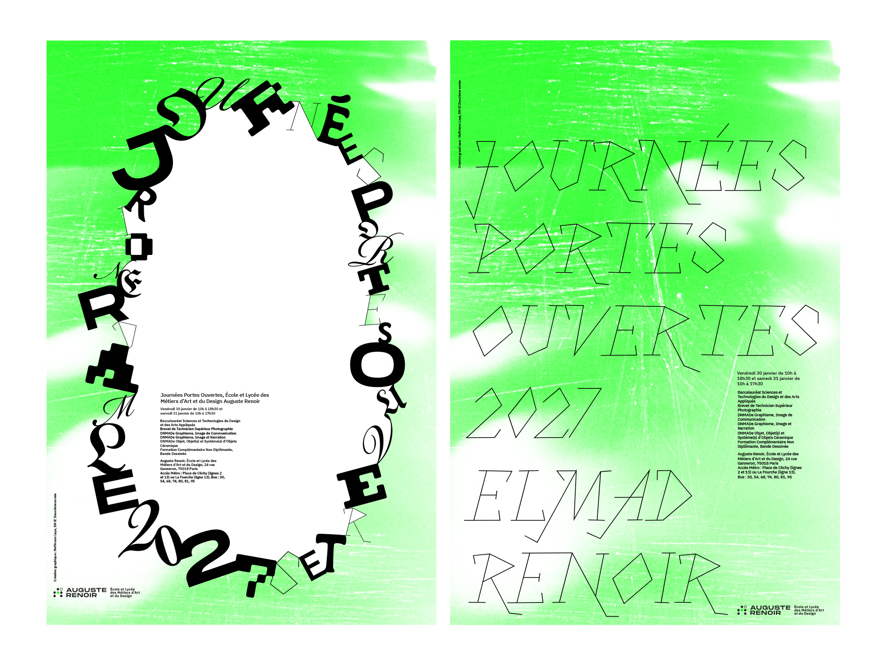

JPO Posters
Proposition of two posters to promote the open day of the art and design school Elmad Auguste Renoir.
My first idea was to represent creativity and graphic diversity by using a complexe background. Elmad Auguste Renoir is a place where you can try again and again to improve yourself and grow as a graphic designer. The textured background is a symbole of those rich experimentations and effort we put into our work.


My second idea was to show the diversity of our culture and our knowledge by showing an opening to the world. Elmad Auguste Renoir is a place where you open your way of thinking and you challenge your mind everyday. It's a challenging and interesting environement to be a part of.

Project "JPO Posters" - 2026